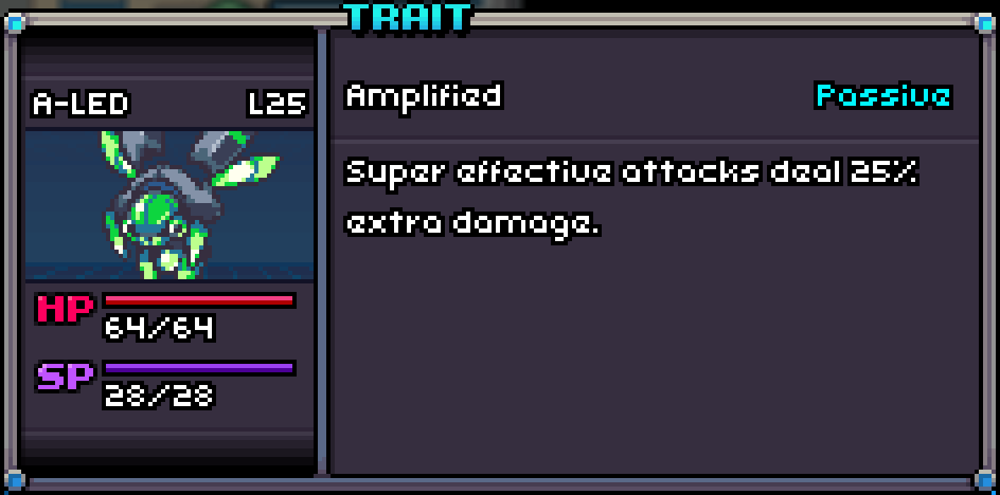
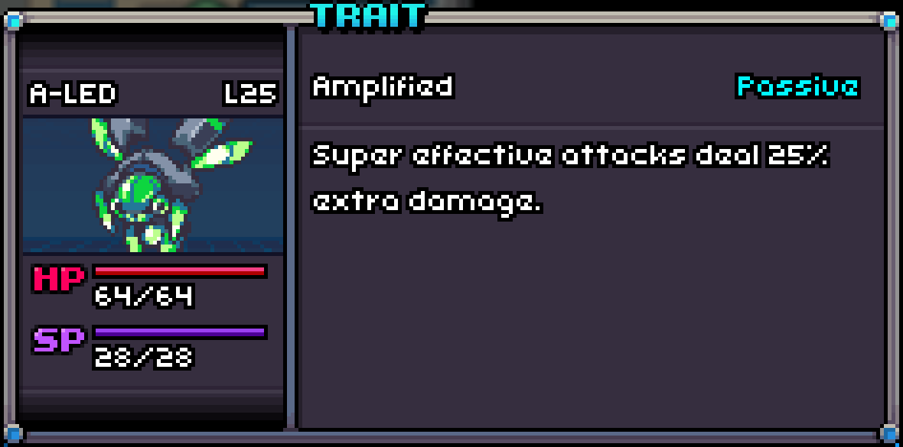

A perfect Lampyre with Amplified!
Amplified
Amplified is a passive Trait that increases the damage multiplier of type effective skills by 25% in the damage calculus.
Super effective damage will have a bonus of x2.5 instead of x2.

A perfect Lampyre with Amplified!
Amplified is a passive Trait that increases the damage multiplier of type effective skills by 25% in the damage calculus.
Super effective damage will have a bonus of x2.5 instead of x2.
| # in Corodex | Name | Type | Traits | HP | Speed | Attack | Defense | Sp. Att | Sp. Def |
|---|